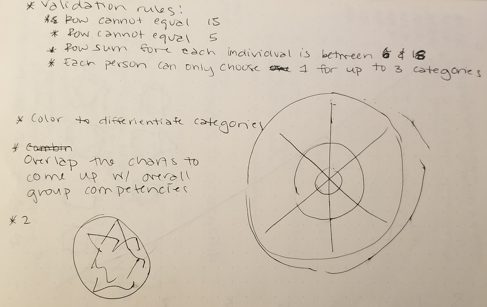
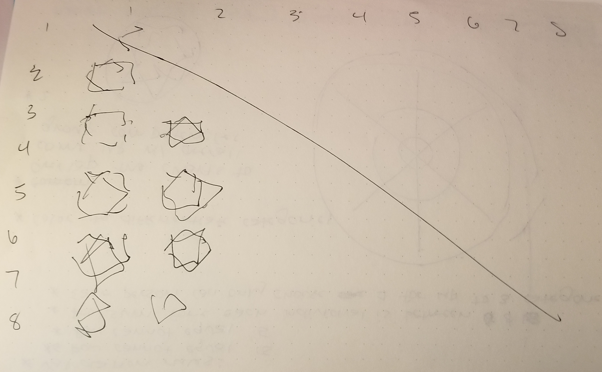
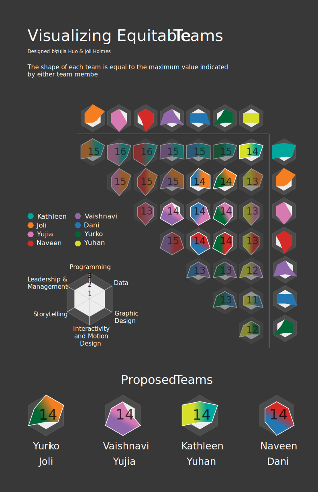

Project
Design Brief
Brainstorm the information about your peer's skills and preferences you would need to compose equitable teams. Collect data from the class. Format these requirements as a data schema, including variable names, data types, and validation. Working in pairs, use visualization to propose equitable committee membership. Create a visualization to argue for a set of teams that balance skills and preferences.
Sketches


Final Design

A PDF of the visualization can be found here.